Signals in stock markets through the eyes of an electrical engineer
Signals in stock markets through the eyes of an electrical engineer
Preface: this article is not really about investing or finance, rather it’s about signal processing and statistics, with a few financial terms thrown in the mix. The goal of this article is to develop intuition for how diversification and signal averaging work, not to build a working trading strategy.
Have you ever stopped to wonder how accurately you have to be able to predict the stock market in order to make a sizeable profit?
Imagine the following scenario:
- You have built a robot that predict the up/down move of every stock.
- Every day for one year, you look at each stock in your universe of stocks that you can buy and sell. You universe can be just a few hand=picked securities, the S&P500 or the entire global stock market.
- For each stock, you ask the robot “is the stock going up or down today?” If the robot says “Up!” you buy the security and hold it until the next day. If the robot says “Down!” you (short) sell the security until the next day.
- Except your robot is just guessing the answer most of the time. Usually, it just flips a coin to determine its answer. But every so often the robot has a moment of clarity, and it tells you the 100% definitive, no guessing truth. It literally sees the future. The only downside: it doesn’t tell you when this happens. This means the robot is correct about 51% of the time, just a little more than blind guessing.
What would happen if we followed the robots suggestions for a year? In order to find out, I wrote a simulator that simulates a number of trials using the robot’s suggestions. To make things simple, we assume the following:
- A market with n securities
- There is a market portfolio, a portfolio containing all the available securities with equal weight.
- All stocks are uncorrelated (highly unrealistic)
- Every stock has a normal distributed daily return, with a mean of zero, and the variance/standard deviation.
- We don’t pay any commission.
The last two parameters, while unrealistic for investment, don’t really impact the point I'm trying to make here, bear with me...
The parameters for the simulation are as follows:
- Number of Periods - There are roughly 250 trading days in a year
- Number of Stocks
- Standard Deviation of Stocks
- Number of Trials
- Initial Portfolio Value - our starting budget, which we invest
- Prediction Rate - how often is the robot “sure”?
- Self Financing – If set to true, we re-invest any profits into our portfolio, and never add or or remove funds from it. If set to false, we reset every day to the Initial Portfolio Value, adding funds to make up yesterday’s losses, and moving any profits aside.
Now, let’s begin our test by having only a single asset, and let’s look at what individual trials might look like. We set our parameters as follows:
- Number of Periods: 250
- Number of Stocks: 1
- Standard Deviation: 1% (per period, meaning it’s about 15.8% annually)
- Initial Portfolio Value: 1000
- Prediction Rate: 1%
- Self Financing: True
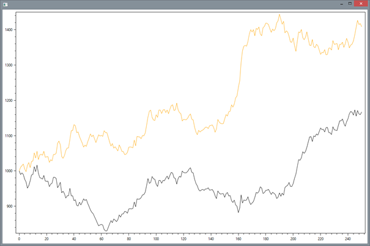 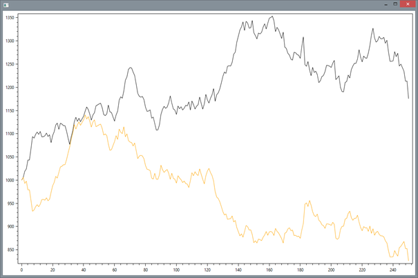
The charts show the Equity Curve of two portfolios.
The black line is the market portfolio; it shows how our initial $1000 grows over the period of 250 trading days.
The orange line is our portfolio; I call this the Alpha Portfolio (as alpha is the variable used to refer to the excess return above the market return.
With only a single security, and a roughly 51% chance of being right, we wouldn’t expect much. The equity line of the portfolio just looks like a random walk, it’s clear that this small advantage does not help when investing in only a single stock.
If we average over 10,000 trials, we get the following results:
Average Market Return -0.02%, Average Market IR 0.00
Average Alpha Return 2.08%, Average Alpha IR 0.13
Beat the market: 54%
The market portfolio returned -0.02% on average (we would expect this to be 0.0%, but such is the nature of Monte Carlo simulation), while the alpha portfolio returned 2.08% on average. The important thing to note here is the Information Ratio (IR) value. In both cases, it is very low, scoring only 0.13 for the alpha portfolio. Finally, the robot beats the “market” (which only contains one security in the example) 54% of the time.
A quick note on the information ratio:
https://en.wikipedia.org/wiki/Information_ratio
“The Information ratio is a measure of the risk-adjusted return of a financial security (or asset or portfolio). It is also known as Appraisal ratio and is defined as expected active return divided by tracking error, where active return is the difference between the return of the security and the return of a selected benchmark index, and tracking error is the standard deviation of the active return”
In simple terms: the information ratio measures how much you have outperformed the market, normalized by the amount of risk you have added on. It is very similar to the Sharpe ratio, the difference being that the Sharpe ratio uses the risk free rate as the benchmark. For a long/short portfolio that is market neutral, your benchmark is usually zero. A market neutral portfolio is, in simple terms, when you have the same amount invested long as you have short. It’s a bit more complicated than that, because you have to take into account the assets Beta, but that’s outside the scope of this article. If your portfolio is market neutral, then no matter which way the market goes, it should not affect you. If the market goes down, your long positions will lose, but your short positions will gain, the opposite holding true if the market goes up.
The information ratio is just as important, if not more important, than the overall return of the portfolio. This is because a portfolio with a high IR can be leveraged more aggressively (leverage is when you borrow additional money to invest. It will multiply your gains, but also your losses, and can result in losing more money than you initially put in).
That’s enough portfolio theory for now. Back to our simulation.
Next, let’s consider what happens when we have not one security, but 500.
- Number of Periods: 250
- Number of Stocks: 500
- Standard Deviation: 1%
- Initial Portfolio Value: 1000
- Prediction Rate: 1%
- Self Financing: True
Average Market Return -0.08%, Average Market IR -0.10
Average Alpha Return 1.98%, Average Alpha IR 2.81
Beat the market: 97.00%
Our return has stayed pretty much the same, however the Information Ratio has gone up massively!
The % of times we beat the market roughly corresponds to the Information Ratio. As described above, the information ratios represents profits over standard deviation. One way to phrase it is: “How many standard deviations above the benchmark return did my portfolio achieve?” In this case, our benchmark is the market with mean zero. Our Alpha Portfolio return was 2.81 standard deviations (often just referred to as sigma) above the market, which corresponds to a probability of https://en.wikipedia.org/wiki/Standard_deviation
Note that the IR and the Beat the market % are not directly comparable, as the percentage is computed by comparing the Alpha portfolio against the measured/simulated market return, while I compute the IR using the true mean market return of zero.
What’s going on here? Let’s try increasing the effect, by upping the number of securities to 1000. For single trials, we get results like these:
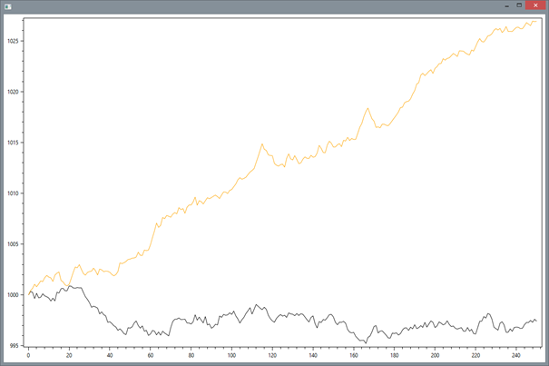 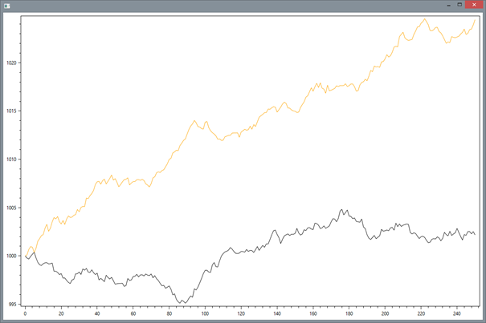
If we increase the number of securities even further, say, 10000 (Just for clarification: there is no way you can find 10000 uncorrelated stocks in the world):
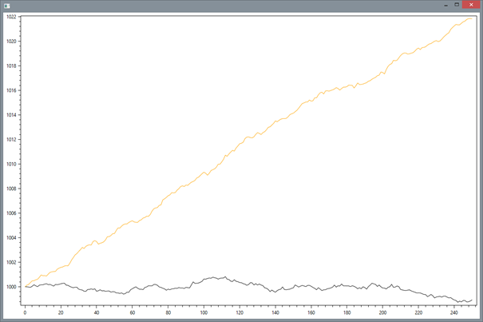
The chart turns into pretty much a straight line.
Why does this happen?
Let’s look at the market portfolio first. As you can see, it hovers just around the $1000 mark. This is because we chose the returns to have a mean of zero. But the more stocks we add to our universe, the less it deviates from the mean. The normal distributed returns can be thought of as a noisy signal: the noise masking the true mean return of zero. For as single stock, the noise can completely hide the true mean return. But noise has an interesting property: if you sum up multiple noisy signals, the noise will partially cancel out, while the signals is summed linearly.
For a more illustrative example, consider this very noisy sine wave:
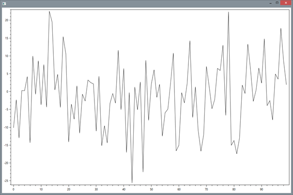
Can’t see the sine wave? Neither can I, it’s completely obfuscated by the noise. However, summing up 100 noisy sine wave signals (with the same phase):
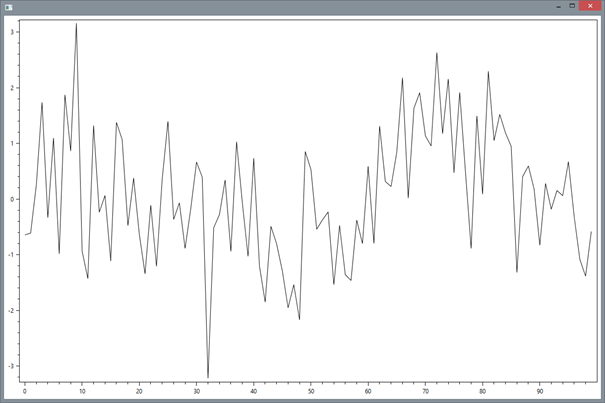
1000:
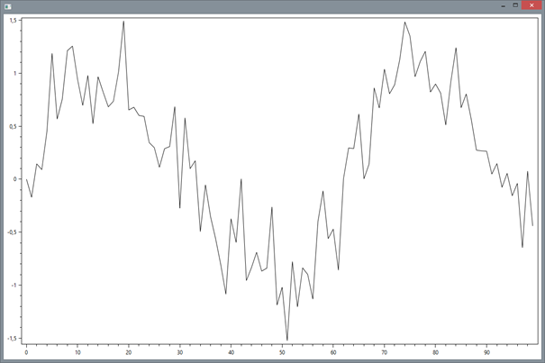
10000:
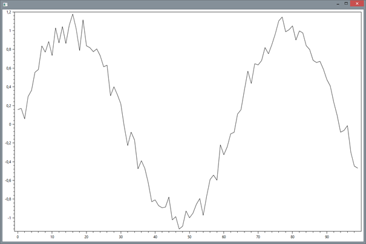
The same effect is occurring in the portfolios when we add more stocks. In general, for uncorrelated, random noise, the signal increases by N, but the noise increases by the square root of N.
https://en.wikipedia.org/wiki/Signal_averaging
Why is this important?
The market portfolio’s “signal” is zero. But now we finally have some use for our robot! Its signal to noise ratio is 1/100 (1% truth, 99% random noise), but by using this principle, we have effectively cancelled out a lot of the noise, and are left with a much stronger signal. That’s why, as we add more and more securities, the equity curve of the alpha portfolio becomes straighter.
In finance, this effect is referred to as “the diversification effect”. It’s the same principle: the more securities you add to your portfolio, the closer to the market’s mean you can get. Each of the individual noisy signals is reduced, leaving only the overall return of the market. In reality (but not in this test, see Part 2 :), the market still carries risk. Risk can generally be classified in two ways:
- Idiosyncratic risk – The risk (noise) arising from each stock (signal). By diversifying (summing up multiple signals), you can reduce the idiosyncratic risk.
- Systematic risk – The risk (noise) of the market. This is one type of risk you cannot diversify away.
Let’s look at a few more simulations with different parameters. Let’s see what happens if we increase the prediction rate of our robot to 5%, but with just 100 securities:
- Number of Periods: 250
- Number of Stocks: 100
- Standard Deviation: 1%
- Initial Portfolio Value: 1000
- Prediction Rate: 5%
- Self Financing: True
- Trial Count: 100
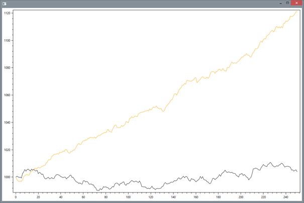
Average Market Return 0.01%, Average Market IR 0.01
Average Alpha Return 10.69%, Average Alpha IR 6.80
Beat the market: 100.00%
For the record, a standard deviation of 6.80 corresponds to a probability of 99.99999999895%, so we would need to run quite a few samples to see a single trial where the Alpha Portfolio underperforms the market.
One interesting thing to note is the effect that standard deviation plays. To test its effect, let’s do another simulation with the self-financing setting disabled:
- Number of Periods: 250
- Number of Stocks: 100
- Standard Deviation: 1%
- Initial Portfolio Value: 1000
- Prediction Rate: 5%
- Self Financing: False
- Trial Count: 100
Average Market Return 0.10%, Average Market IR 0.06
Average Alpha Return 10.07%, Average Alpha IR 6.40
Beat the market: 100.00%
Now let’s double the standard deviation to 2%:
Average Market Return 0.14%, Average Market IR 0.04
Average Alpha Return 19.81%, Average Alpha IR 6.37
Beat the market: 100.00%
The return doubled, but the IR stayed unchanged (almost, but this error stems mostly from the randomness in the simulation). Choosing more volatile stocks does not increase our risk/reward ratio.
Finally, what happens if we increase the prediction rate to 100%, and turn off self-financing? For simplicity, let’s look at 10000 securities over 100 periods (100 trading days):
- Number of Periods: 100
- Number of Stocks: 10000
- Standard Deviation: 1%
- Initial Portfolio Value: 1000
- Prediction Rate: 100%
- Self Financing: False
- Trial Count: 100
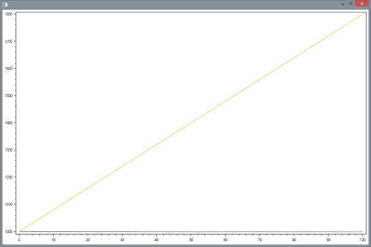
Average Market Return 0.00%, Average Market IR 0.04
Average Alpha Return 79.79%, Average Alpha IR 1343.09
Beat the market: 100.00%
Wow do we end up with the number 79.79%?
We are simulating a forecast that predicts every stocks’ move with 100% accuracy. The asset has a normal distributed return with mean 0 and std. deviation 0.01, so by using our forecast we effectively get:
Rn is the return of the n’th stock for any given day, and is normally distributed. Taking the absolute value of a normal distribution you get the Folded normal distribution. https://en.wikipedia.org/wiki/Foldednormaldistribution
Since Wikipedia is kind enough to supply the formula for the mean:
If we plug out mean of mean of zero and sigma of 0.01 into that formula, we end up with 0.00797885, multiplied by 100 (number of periods), we end up with 79.7885%, very close to our simulated value.
As a final example, here‘s what the equity curve looks like if we again enable Self financing:
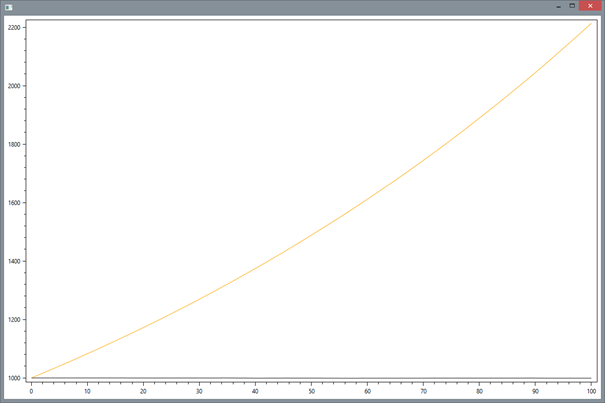
Average Market Return -0.01%, Average Market IR -0.06
Average Alpha Return 121.39%, Average Alpha IR 1886.26
Beat the market: 100.00%
The curve has now taken on a slight exponential shape, and the overall return has risen significantly. Such is the power of compounding.
We can double check the returns here by computing:
(1 + average daily Return)^periods - 1
= (1 + 0.00797885)^100 - 1
= 1.2136
= 121.36%
We have seen how a very noisy signal can be used to create a low risk portfolio using the power of signal averaging / diversification. We can tell that even a very weak signal, buried in noise, can give you a significant advantage over the market.
The simulations are not indicative of how markets behave in real life. You will not be able to find ten thousand uncorrelated securities, and you will not be able to trade them without paying commission. But should you find a signal, that has a weak but measurable predictive power, you can use these properties to your advantage. To improve you strategy you could also incorporate a factor of certainty in your prediction (i.e. don‘t trade unless the robot gives you some sort of assurance that he might not just be guessing this time). You can also combine multiple weak signals to gain an even stronger signal.
All the code for this article can be downloaded here: PredictingMarkets.zip